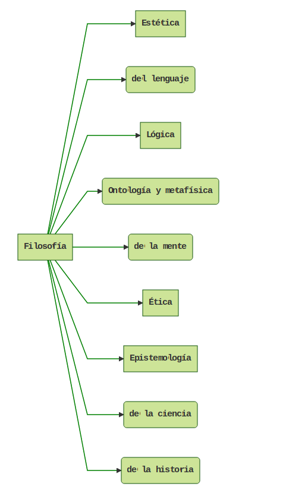

¿Qué es la filosofía de la ciencia?
La filosofía de la ciencia es una subdisciplina de la filosofía que se institucionalizó a principios del siglo XX. Con institucionalización queremos decir que esta disciplina se incorporó en la curricula de las universidades, impartiendo los primeros cursos y abriendo los primeros departamentos de investigación en las universidades. Esta profesionalización de la disciplina se debió, quizás, a los pioneros trabajos de Karl Poper y de los filósofos y científicos del Círculo de Vienna.
{kind=link}
La filosofía de la ciencia integra varias de estas subdisciplinas como la lógica, la epistemología o teoría del conocimiento, ética, etc. Actualmente, la filosofía de la ciencia está incorporada en muchos programas de posgrado en universidades de todo el mundo. Por ejemplo, en la Universidad Nacional Autónoma de México (UNAM) el Programa de Maestría y Doctorado en Filosofía de la Ciencia1 contempla las siguientes líneas de investigación en su programa (te dejo el link del plan de estudios):
- Filosofía de la ciencia
- Filosofía de las ciencias cognitivas
- Filosofía de las matemáticas y la lógica de la ciencia
- Historia de la ciencia
- Estudios filosóficos y sociales sobre la ciencia y tecnología
- Comunicación de la ciencia
Por la naturaleza misma de la filosofía de la ciencia, los estudios realizados son multidisciplinares, sin embargo, en algunas universidades anexan estudios sociológicos e históricos de la ciencia. Una de las líneas de investigación de suma importancia, y que no todos los posgrados tienen (desde mi punto de vista), es la comunicación de la ciencia. En un contexto de fakenews, la transmisión de información verídica sobre temas científicos es fundamental para combatir la desinformación y mentiras que se transmiten rápidamente.
Cada línea tiene, naturalmente, sus propios intereses pero el objetivo común es tratar a las ciencias, sus teorías y modelos, como objeto de estudio. No obstante, los temas de cada línea se entrelazan, por ejemplo, la filosofía de la economía puede estudiar los modelos económicos desde la metafísica de la causalidad (filosofía de la ciencia) y la metodología para capturar estas relaciones causales (lógica de la ciencia), o la economía del comportamiento desde la teoría de la decisión (lógica de la ciencia) y el razonamiento (filosofía de la mente).
Esta introducción sobre cómo se ha estructurado la filosofía de la ciencia no tiene como propósito entrar en los temas de la disciplina, ésto se irá desarrollando en próximas entradas.